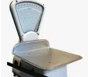

La utilización de miligramos es habitual en el ámbito de los laboratorios. En este tipo de establecimientos suelen emplearse balanzas analíticas con una sensibilidad de 0,1 miligramos para realizar mediciones precisas de drogas, reactivos químicos y otros productos.
En definitiva, el miligramo cuyo símbolo es mg es un submúltiplo del gramo, que es la principal unidad de masa en el Sistema Internacional de Unidades. Su uso aparece cuando se trabaja con elementos de masa muy reducida.
La utilización de miligramos es habitual en el ámbito de los laboratorios. En este tipo de establecimientos suelen emplearse balanzas analíticas con una sensibilidad de 0,1 miligramos para realizar mediciones precisas de drogas, reactivos químicos y otros productos.
Precisamente de la misma manera, hay que establecer que los doctores tienen muy en cuenta los miligramos a la hora de determinar un tratamiento a sus pacientes. Y es que deben partir de la gravedad en la que se encuentren y también de sus condiciones físicas para indicarles la cantidad adecuada en miligramos que deben tomar de un medicamento en cuestión